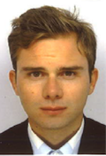

Présentation
Expériences
Formations
Compétences
Divers
Blog
Benoît FOULON
23 ans
Poste actuel:
Chef de projet Relation Client Web 2.0
Télécharger mon CV

Expériences professionnelles
Chef de projet Relation Client Web 2.0
ORANGE
, SEPTEMBRE 2015 - SEPTEMBRE 2016
Optimisation des parcours proposés sur la page contact (Brief Marketing, Road Map)
Gestion des parcours clients
Pilotage de projets visant à l'amélioration de la relation client
Optimisation du référencement web (SEO)
Analyse du trafic et des parcours clients pour un reporting mensuel présenté lors des comités de direction de la page contact.orange.fr
Pilotage de test utilisateurs et analyse des résultats
Assistant chef de produit
EDITIONS ATLAS
, JUILLET 2014 - JANVIER 2015
Médias WEB: Suivi des campagnes en SEA, Affiliation et en Display (CPA, CAC,...)
Presse: Réalisation des plans média pour la presse (TV et Spécialisée) & Mise en place des tests régionaux pour la presse TV
Télémarketing & Service client: Pilotage des prestataires, gestion qualitative des campagnes télémarketing & Réalisation du bilan des campagnes
Formations
MASTER GRANDE ECOLE
Septembre 2013 - Septembre 2016
TELECOM ECOLE DE MANAGEMENT (EVRY, 91)
SEMESTRE UNIVERSITAIRE
Janvier 2015 – Mai 2015
UQAM, MONTREAL, CANADA
MASTER 1 ETUDES INTERNATIONALES
Septembre 2012 - Juin 2013
FACULTE JEAN MONNET (SCEAUX, 92)
LICENCE ECO-GESTION
Septembre 2011 - Juin 2012
FACULTE JEAN MONNET (SCEAUX, 92)
BTS COMPTABILITE ET GESTION DES ORGANISATIONS
Septembre 2009 - Juin 2011
LYCEE PARC DE VILGENIS(MASSY, 91)
Compétences
Pack Office: Word, Excel, PowerPoint,...
Pack Google: Analytics, Adwords,...
Divers
Activités sportives: Boxe Thaï, tennis et football
Raid aventures Saint Jacques de Compostelle (1680 km en VTT)
Passionné par les nouvelles technologies